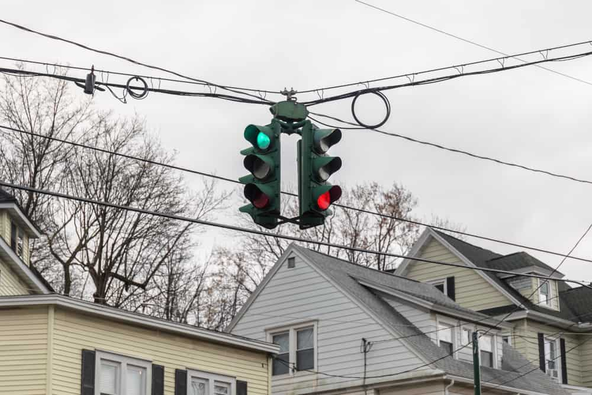

"I'm not a robot". The animated checkbox and tiles are instantly recognizable to any netizen worthy of the name. What do these fuzzy letters say? How many animals are there? Find all the bicycles. As resources and services have increasingly found their way onto the internet, the defenses guarding their access have grown in sophistication.
To protect against automated attacks, websites have an interest in determining if a user is indeed human, and the most common way of doing so is to use what's known as a reverse Turing test. That is, ask the user to complete a series of tasks presumably any human could easily complete but would cost a bot significant effort. Its most common reification is the CAPTCHA — the Completely Automated Public Turing test to tell Computers and Humans Apart. Here's Google's reCAPTCHAv2 (image not theirs):
In the race to stump machines, it's not the machines that have been left behind, but many of our fellow humans. The pervasive assumption that all humans see, think, and understand in the same way has made CAPTCHA, especially as machine vision exceeds human vision, more a discriminator of ability among humans than against machines. But how do we make a fundamentally inaccessible puzzle accessible? In the interactions below, we demonstrate what works and doesn't work, some of the research, and some plausible solutions. Empathize and enjoy.
This is a demo of the CAPTCHA game. The goal is to select all images that contain a crosswalk. The images are displayed in a grid, and the user can select an image by clicking on it. Clicking again de-selects an image. Submit the chosen images for evaluation by clicking "Submit" and play again by clicking the "Play Again" button that appears. We encourage you to play multiple times to get a representative average time.
It takes the average user 32 seconds. We're confident you are not the average user 😊.
This game is intended to be a simplified version of a CAPTCHA, not a replacement. By simulating challenges that may arise in completing the game, we aim to demonstrate how inaccessible CAPTCHAs become. This difficulty should be reflected in the average time required. We try to be as faithful as possible to the conditions that may lead to these challenges, and take full responsibility for any inaccuracies.
About 12 million Americans have some form of vision impairment, of which 1 million are legally blind. 4.2 million have uncorrectable vision impairment, a number expected to double by 2050 due to the epidemics of diabetes and other chronic conditions. The most common impairment comes from vision distortion as a result of refractive errors (near- and far-sightedness), cataracts, or age-related macular degeneration. Roughly 20 million American over 40 have some form of cataracts and 1.8 million suffer macular degeneration. Macular degeneration has no known cure.
Diabetic retinopathy is caused by damage to the blood vessels behind the eye, leading to patches of receptors unable to process light. An estimated 4.1 million Americans are affected by retinopathy of some form, of which nearly a million are deemed "vision-threatening".
Color-blindness is a condition that affects 1 in 12 men and 1 in 200 women. It's characterized by the inability to distinguish between certain colors, most commonly between red and green (protanopia). This affects not just the colors red and green, but all colors (e.g. purple) that have them as a base color. Many color blind people are surprised to learn that peanut butter (which has a component of red color) is not in fact green. In a box of 24 crayons, most color blind people can only accurately identify 5 of them.
In the following example, the user is asked to select all images of traffic lights with green signals. If the user is color blind, they may not be able to distinguish between the green and red signals and would be forced to rely on other cues such as the position of the lit signal in the traffic light. This is further complicated by cases such as where the traffic light is set up in a horizontal orientation, or different countries where traffic lights obey different conventions
We present these remedies assuming a solution would keep the graphical interface. An immediately obvious solution is multimodal CAPTCHAs: users may select between visual, auditory, or even biometric inputs, but we save that for the very end.
Humans are hardwired to recognize faces and the emotions they display even with quite severe distortions. A raised eyebrow or a sideways head are easy to recognize because of the numerous contours that define the human face. Colors no longer matter; we still recognize the person under the face paint. Asking users to identify faces with a particular emotion is an effective way to bypass visual distortions to a certain degree.
Emotion CAPTCHAs may fail for users with social-emotional agnosia or alexithymia, which inhibits the characterization and understanding of emotional display. Both often occur in individuals with schizophrenia or autism.
In a similar vein, motion CAPTCHAs rely on the ability to understand cause and effect in the physical world. A short GIF of a person or object moving through space is enough to answer the question "what preceded this" or "what follows this". For example, a person moving their arms towards their chest suggests a hug, or a lamp precariously placed suggests it will fall over. Given multiple choices of possibilities, the user selects the correct one.
This solution is especially effective if the user has extremely limited vision. Screen readers, which are normally inoperable on CAPTCHAs (that would defeat the purpose) can be used to read alt-text on images (e.g. "the lamp is wobbly") as well as the multiple choices.
The following are similar ideas or ideas limited to certain contexts:
Dyslexia, which affects the ability to read, is present in around 3-7% of the population at varying degrees and up to 20% may have some general symptoms that go unnoticed and undiagnosed. We recreate here what a dyslexic reader might experience with normal text. It should be clear that heavily convoluted series of letters with neither context nor morphemic cues (ie. prefixes, word stems, etc. ) are even more difficult. Below we present samples to any user from the "difficult" text CAPTCHA dataset.
(Simulation off:) Dyslexia, which affects the ability to read, is present in around 3-7% of the population at varying degrees and up to 20% may have some general symptoms that go unnoticed and undiagnosed. We recreate here what a dyslexic reader might experience with normal text. It should be clear that heavily convoluted series of letters with neither context nor morphemic cues (ie. prefixes, word stems, etc. ) are even more difficult. Below we present samples to any user from the "difficult" text CAPTCHA dataset.
Inaccessibility doesn't even need to come from psychological conditions. Most of the world does not speak English or use the Latin alphabet. Text CAPTCHAs which require users to type out an answer in an alternate keyboard while matching unfamiliar characters is an easily solvable problem — generate text in different alphabets. While we expect the most commonly used websites to be internationalized (support different languages), CAPTCHAs were conspicuously behind in this trend for several years. Image based CAPTCHAs, such as the ones Google provide, support internationalization (another good reason why users must be able to choose their preferred modality). Here's a real-life example of a captcha in Cyrillic (alphabet of 32 letters that over 250 million people in Eurasia read and write), typing out a sentence such as "aлмаз school" on an English keyboard is exceedingly difficult.
Apart from increased internationalization, no good workarounds exist for text-based CAPTCHA solutions. Whereas with common visual impairments the problem is with transmitting information, textual impairment is usually caused by an underlying difficulty in interpreting information. Given that solving times for text based CAPTCHAs are only marginally shorter than image based CAPTCHA but have a higher rate of inaccuracy, we believe it should be completely eliminated.
We discuss the concept of a "MAPTCHA", or mathematical CAPTCHA, for the sake of completeness. A numerical prompt supported by a screen reader offers a logic or reasoning puzzle to the user. This fails to work for several reasons including for users with cognitive impairments such as dyscalculia. The general public also often exhibits an inability to reason.
Biometrics, such as fingerprints and facial profiles, provide a secure form of identification. However, the limitations of biometrics must be considered, such as for those who do not have fingers or who are too old for fingerprints to be discernable. Privacy concerns abound. Most importantly, most devices such as laptops and some smartphones are not equipped with fingerprint sensors, making this solution infeasible for the time being.
Zero knowledge proof and 2-factor authentication (2FA) have recently become common as security measures a step beyond usernames and passwords. A 2-factor authentication usually involves generating the keypass or pin on another trusted device which is then used to verify a user. However, a bot is able to recreate these steps. A cryptographic attestation of personhood implements biometric authentication without passing any biometric information, instead producing digital certificates used to verify personhood. This is called a zero-knowledge proof; no information is leaked.
A hardware alternative exists in the Yubikey, a USB verification device that only requires button presses from the user. Purchasing authentication devices at scale is prohibitively expensive and comes with third party provided statistical analysis on user behaviour.
Other third-party solutions include Google's reCAPTCHA v2 and noCAPTCHA v3. The v2 reCAPTCHA process involves presenting the user with a visual identification challenge, and then analyzes response accuracy and time to determine whether the user is are human. Not every CATPCHA iteration will result in a challenge, but as demonstrated above, these can be uniquely difficult for certain groups of people.
Conversely, reCAPTCHA v3 does not require any user interaction or challenge solving. Instead, it runs in the background of the website and evaluates the user's behavior such as mouse movements and keyboard input to determine the probability of a machine. A score is returned to the host website, which sometimes then decides whether to issue a traditional CAPTCHA. While it minimizes user interaction, one potential disadvantage is that they requires website owners to share a significant amount of user data with Google including IP addresses, user agents, and other browsing behavior. This may raise privacy concerns for users and website owners who are uncomfortable sharing this information with a third party. Bots, if willing to spend the time and effort to replicate human behaviour, also have a fair chance of bypassing this test.
Finally, we introduce the concept of a honeypot. Bears like honey! Bots like buttons. Click in the area at the end of this paragraph. If you were a user, you'd never think to click that invisible button, but a bot reading the HTML describing the page would. This technique is called a "Honeypot CAPTCHA" and, for example, can be implemented by asking the user to leave a text field blank when filling out a form or leaving time consuming traps that only bots would engage with. Widely used in the field of load balancing and network security, honeypots and probabilistic analysis are commonly used in backend systems, not user interfaces, but nevertheless remains an area of active research.
An accessible CAPTCHA is difficult to design, and there are no solutions that the industry has found convincing and effective enough to implement at scale. We conspicuously fail to mention how effective many of these tactics are against the growing capabilities of artificial intelligence because, well, none of these are very effective. Google stopped using audio based CAPTCHAs because their own voice recognition engine beat it 99.8% of the time. Text and object classification by the latest transformers have rendered distortion based techniques moot. Cause and effect tests are easily broken by machine learning models able to follow instructions, read emotions, and explain comics.
We must assume that such capabilities will, in short order, because so widespread and accessible (haha) that CAPTCHAs no longer have a role anywhere. Websites will simply have to adapt to assuming all users are bots, or proofs based techniques will become the norm. Perhaps one day everyone will carry a Yubikey and a proof of humanity badge. But we think this is for the better — humanity will no longer spend a total of 500 years every day on CAPTCHAs. Let's change the paradigm, and let's make sure everyone is treated as a human being.
Abdullah Hasan, W. K. (2016). A survey of current research on CAPTCHA. International Journal of Computer Science & Engineering Survey, 7(3), 1–21. https://doi.org/10.5121/ijcses.2016.7301
Cole, S. (2019, January 4). Researchers fool recaptcha with Google's own speech-to-text service. VICE. Retrieved April 10, 2023, from https://www.vice.com/en/article/pa55z8/researchers-fool-recaptcha-with-googles-own-speech-to-text-service?utm_source=reddit.com
DataDome. (2022, September 6). 6 ways better than recaptcha to prevent form & website Spam - DataDome. 6 Ways Better Than ReCAPTCHA to Prevent Form & Website Spam. Retrieved April 11, 2023, from https://datadome.co/bot-management-protection/captcha-recaptcha-alternatives/
Goodfellow, I. J., Bulatov, Y., Ibarz, J., Arnoud, S., & Shet, V. (2014, April 14). Multi-digit number recognition from street view imagery using deep convolutional neural networks. arXiv.org. Retrieved April 10, 2023, from https://arxiv.org/abs/1312.6082
Google. (2022, August 8). ReCAPTCHA v3 | google developers. Google. Retrieved April 10, 2023, from https://developers.google.com/recaptcha/docs/v3
Harvard University. (n.d.). Dyslexia simulator. HGSE Teaching and Learning Lab. Retrieved April 10, 2023, from https://tll.gse.harvard.edu/dyslexia-simulator
Honeypot. Drupal.org. (2023, March 21). Retrieved April 10, 2023, from https://www.drupal.org/project/honeypot Inaccessibility of CAPTCHA. W3C. (2021, December 16). Retrieved April 10, 2023, from https://www.w3.org/TR/turingtest/
Ladd, W. (2021, August 12). Introducing Zero-knowledge proofs for private web attestation with Cross/multi-vendor hardware. The Cloudflare Blog. Retrieved April 10, 2023, from https://blog.cloudflare.com/introducing-zero-knowledge-proofs-for-private-web-attestation-with-cross-multi-vendor-hardware/
Meunier, T. (2022, July 12). Humanity wastes about 500 years per day on captchas. it's time to end this madness. The Cloudflare Blog. Retrieved April 10, 2023, from https://blog.cloudflare.com/introducing-cryptographic-attestation-of-personhood/
Moreno, L., Gonzalez, M., & Martinez, P. (2014). Captcha and accessibility - is this the best we can do? Proceedings of the 10th International Conference on Web Information Systems and Technologies. https://doi.org/10.5220/0004858901150122
Scott, E. (2018, January 18). CAPTCHAs have an 8% failure rate, and 29% if case sensitive – articles. Baymard Institute. Retrieved April 10, 2023, from https://baymard.com/blog/captchas-in-checkout